Abstract.
Mi preciosa Bere. Han pasado ya nueve meses desde que nos conocimos, y seis desde que estamos juntos. En todo este lapso hemos aprendido muchísimo. También llegaron momentos difíciles, mas siempre encontramos la forma de resolverlos juntos. Sin importar lo que suceda, no hay que olvidar los momentos bellísimos que hemos vivido...
⩔La conexión aparece.
Salíamos a hacer tarea. Aunque en el fondo, algunas veces fue una excusa para poder vernos. No puedo olvidar esa calidez que sentía al estar tan cerquita de ti, al recostarme en tu hombro y al abrazarte. Tal vez se debe a que eso no ha cambiado.
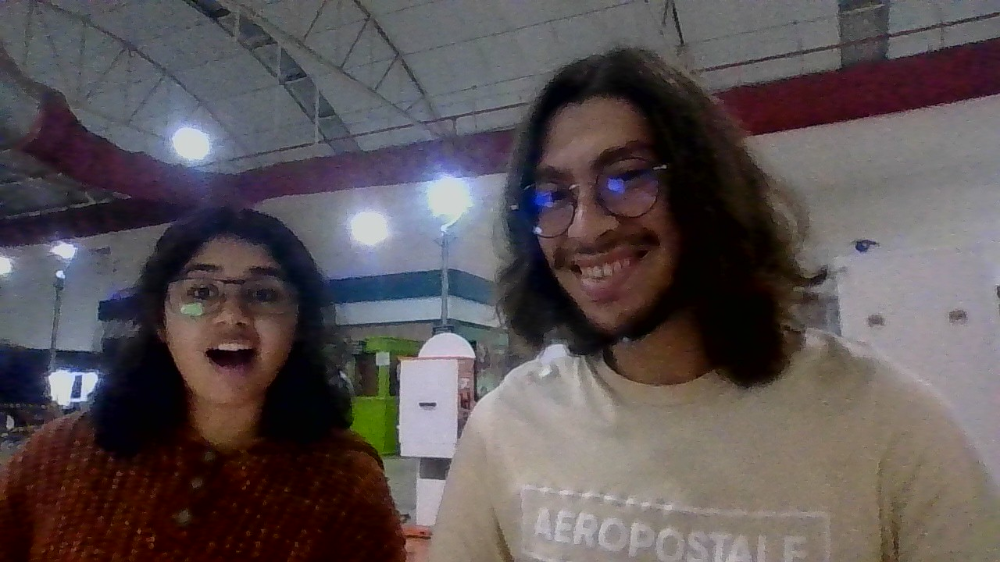
:0
El primer beso siempre encuentra su momento.
Salimos una noche a cenar. Me arreglé lo mejor que pude, me puse el perfume que te encanta, y me fui corriendo a esperarte. Llegaste con una cajota de regalo preciosa e imposible de esconder, y nos fuimos. Mientras sujetaba con delicadeza tus manos esperando por la comida, no podía evitar ver esa sonrisa tan hermosa que posees y el brillo en tus ojos. Me pareció tan lindo. Desde ese momento, las ganas de darte un besote en tus cachetitos todos bonitos ya eran incontenibles. Más tarde, simplemente no me pude resistir más, y que te lo doy. A partir de ahí, no dejamos de robarnos besitos por todo el camino, en cada banqueta, en cada esquina.
Dos días después me dejaste temblando con un beso, a día de hoy aún no tenemos idea de por qué. Suele creerse que el primer beso de alguien debe ser memorable, en una ocasión súper especial. Es válido. Yo creo que siempre y cuando sea la persona adecuada y haya amor, el entorno es lo de menos; eso será suficiente para hacerlo memorable.
⩔Una asombrosa aventura espontánea.
Es, sin duda, el imprevisto más hermoso de mi vida. Me ofreciste un lugar en aquella carrera de forma tan espontánea. Realmente quería ir y correr en un lugar tan memorable y culturalmente importante a tu lado.
Había tantas dudas: "Nunca antes he ido de viaje solo, sin mi familia", "si voy, ¿tendré dinero suficiente para la siguiente semana?" "¿Qué le diré a mi madre? Con tanta noticia que ve de allá, seguro no estará de acuerdo", "Ni siquiera tengo el calzado adecuado para correr, y mis rodillas no están en su mejor momento", "¿Qué pensarán de mí los otros integrantes de Gacelas?". Aunque ajustado, tendría dinero suficiente para la siguiente semana; a veces, no es necesario contarle todo a mi madre, eso sólo alimenta su ansiedad; el calzado es lo de menos, correré con cuidado; Gacelas es la familia de Bere, estaré bien; y lo más importante: Aunque no iba mi familia, no iba solo, iba contigo. Eso disipó todo el miedo. Tomé la decisión en ese mismo instante: Iba a ir. Una oportunidad así es casi imposible, sería un error garrafal no tomarla.
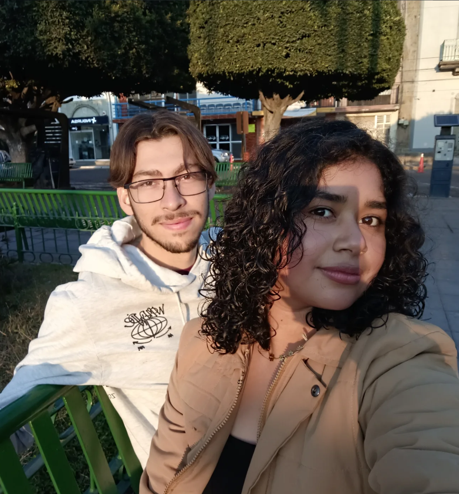
Interactúa con las
imágenes :D
Y así fue. El sábado por la mañana, entusiasmado (y muy nervioso) desperté. Preparé lo que faltaba y me fui a tu casa. Una vez en la camioneta, mi mente se aclaró; no había más niebla. De pronto estábamos en Guanajuato, disfrutando de sus callejones y sus leyendas.
Al día siguiente desperté antes que mi alarma. Pronto estábamos en la línea de salida, esperando el disparo, llenos de adrenalina y contagiados del espíritu y la emoción de los más de tres mil atletas que estaban presentes. Fue una ruta complicada. Verte correr con tanta pasión y luchar hasta el último kilómetro, después de una recuperación tan dura de esa lesión en el tobillo, fue muy conmovedor.
Los recorridos, la carrera, el beso en aquel mítico lugar, los paisajes, las horas de sueño perdidas por una tarea interminable, la conexión, ese primer acercamiento íntimo, el pobre infante al que enviaron a interrumpir nuestra sesión fotográfica. Fueron tres días inolvidables.
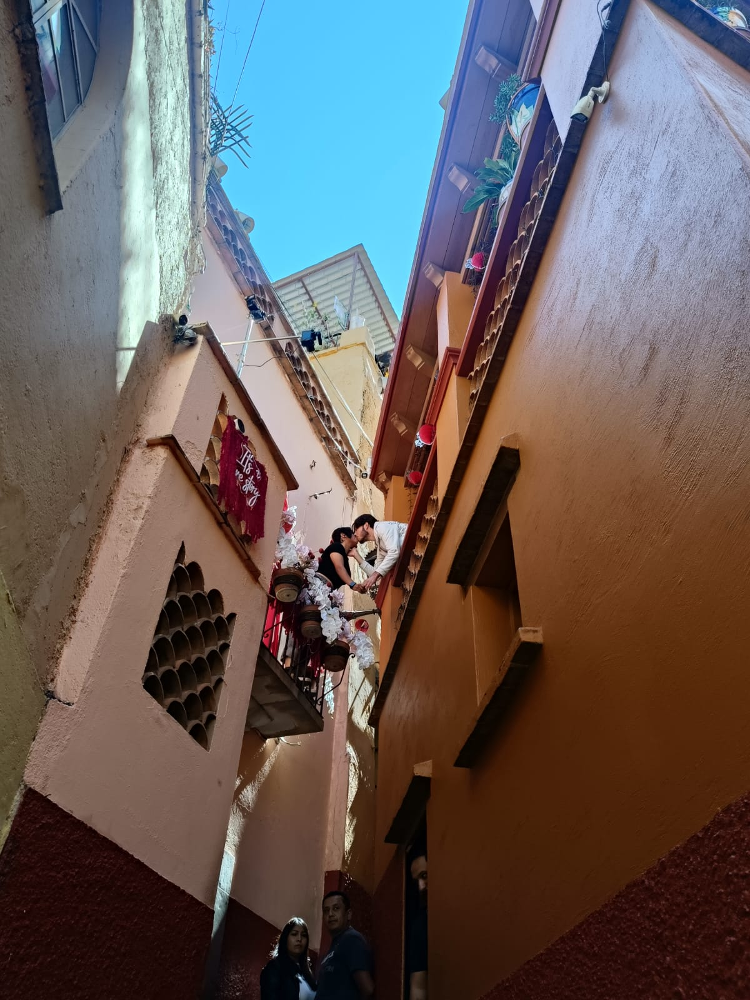
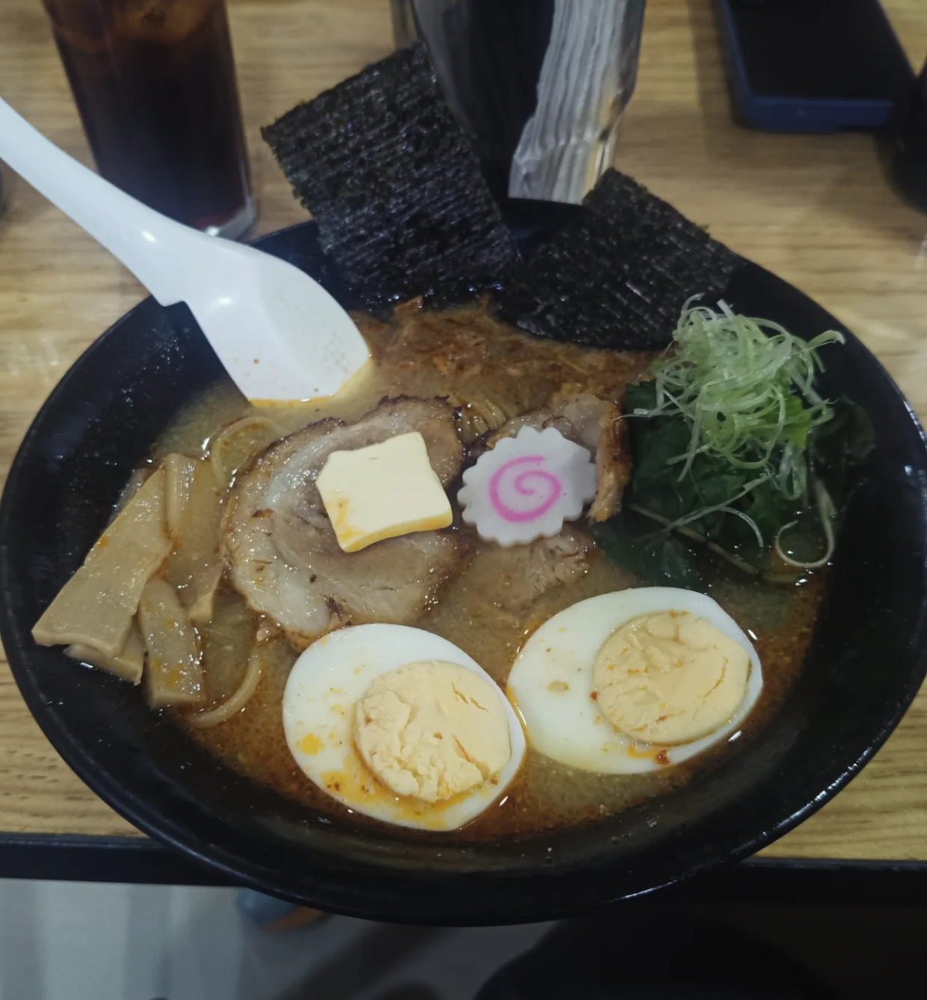
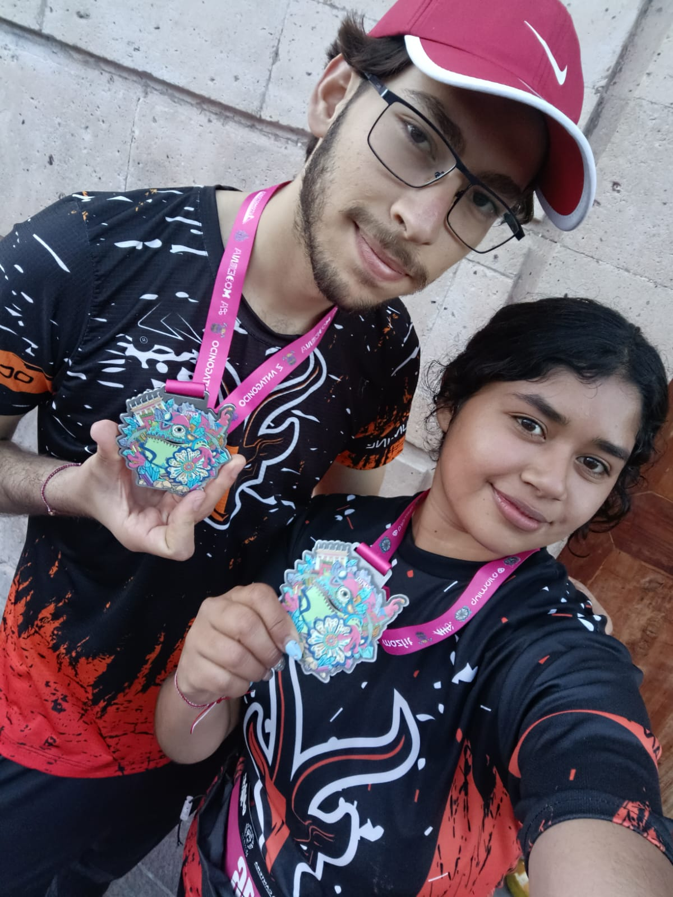
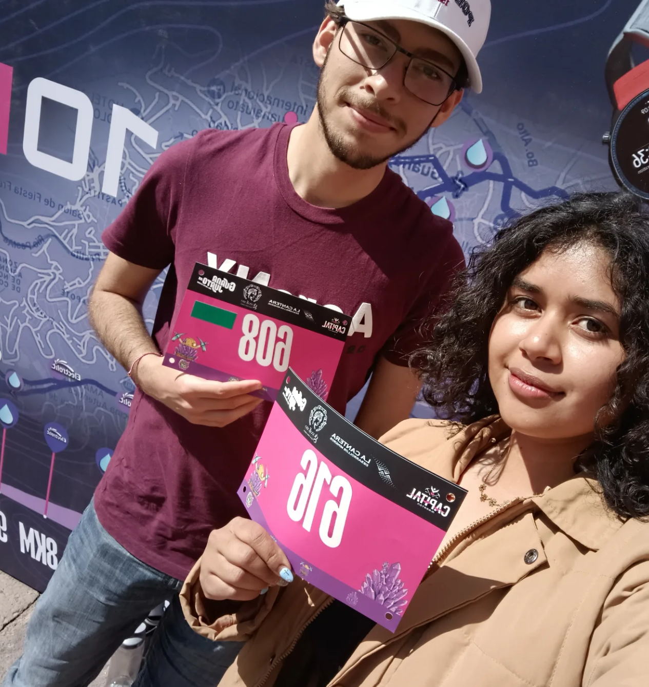
Papelitos de amor.
Aún recuerdo toparnos entre clases y darnos notitas bonitas con algún dulcito. Eran detallitos pequeños, pero con un gran significado, y poseían la capacidad de endulzar hasta el más amargo de los días.
⩔Pegados como chicles.
Era muy tarde, decidiste quedarte a dormir en mi habitación por primera vez. Me agarraste por sorpresa, pero la idea me tenía muy contento. Esa noche la disfruté como nunca. A partir de ahí ya era imposible despegarnos. Qué bonito.
⩔Otras formas de mostrar amor.
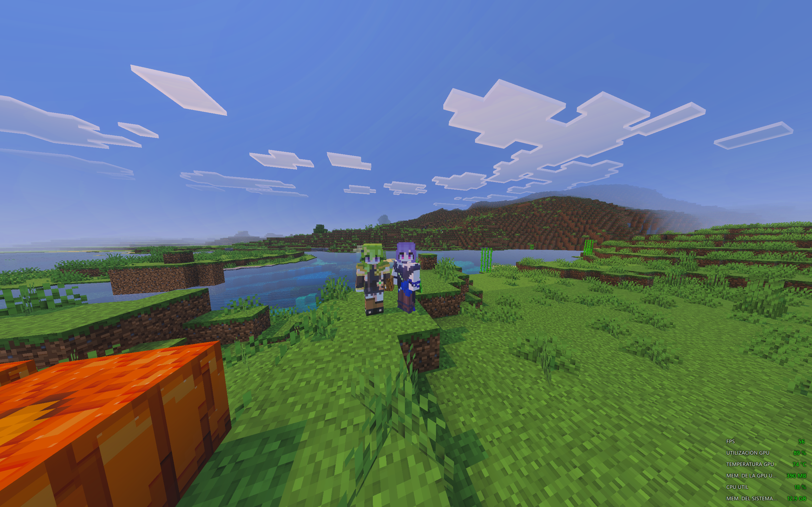
Estar a millones de mazapanes de distancia ha sido muy duro para ambos. Pero estar en contacto, llamándonos casi a diario, jugando de vez en cuando y buscando la manera de sentirnos presentes a pesar de la lejanía es muy bonito, aunque desafiante. Y si algo bueno tiene extrañarnos tanto, es que nuestros reencuentros se vuelven aún más preciosos.
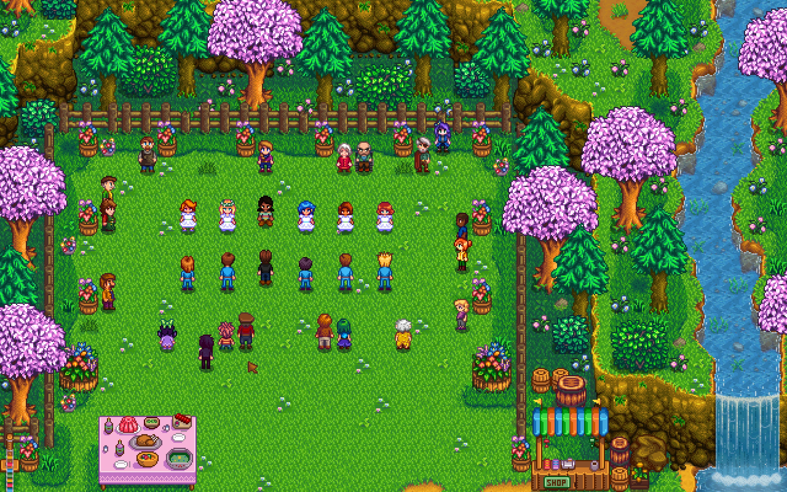
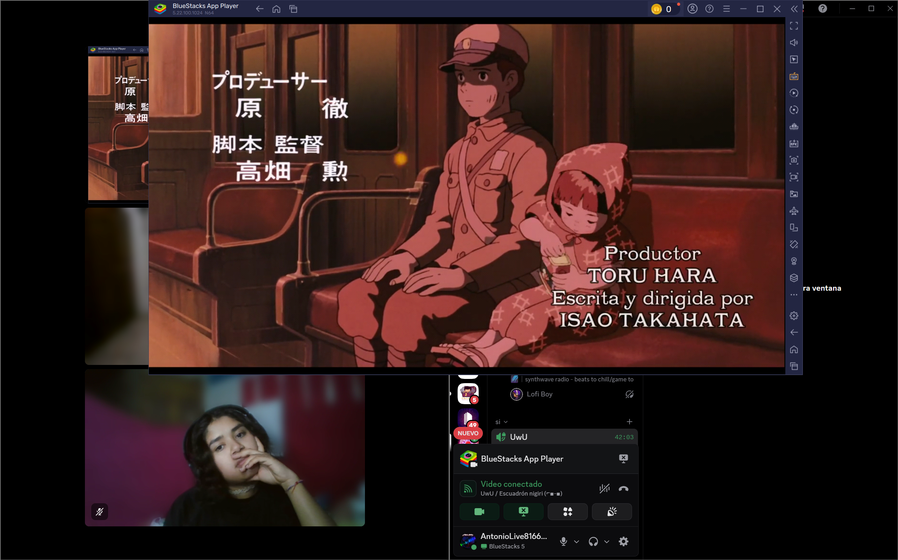
Amor sanador.
Una de las cosas más bonitas de nuestra relación, es el hecho de lo importantes que somos el uno para el otro, lo que nos lleva a cuidarnos tanto entre nosotros. "¿Ya comiste?", "¿Ya bebiste agua?", "¿Cómo estás?", "¿Cómo te sientes?", "Cuideseeeee", "¿ya registró sus gastos?", "amor, ya vete a dormir, te ves cansado". Esas preguntas (y regaños amorosos), besitos en la frente y abrazos, aunque pequeños, demuestran un profundo interés por el bienestar del otro.
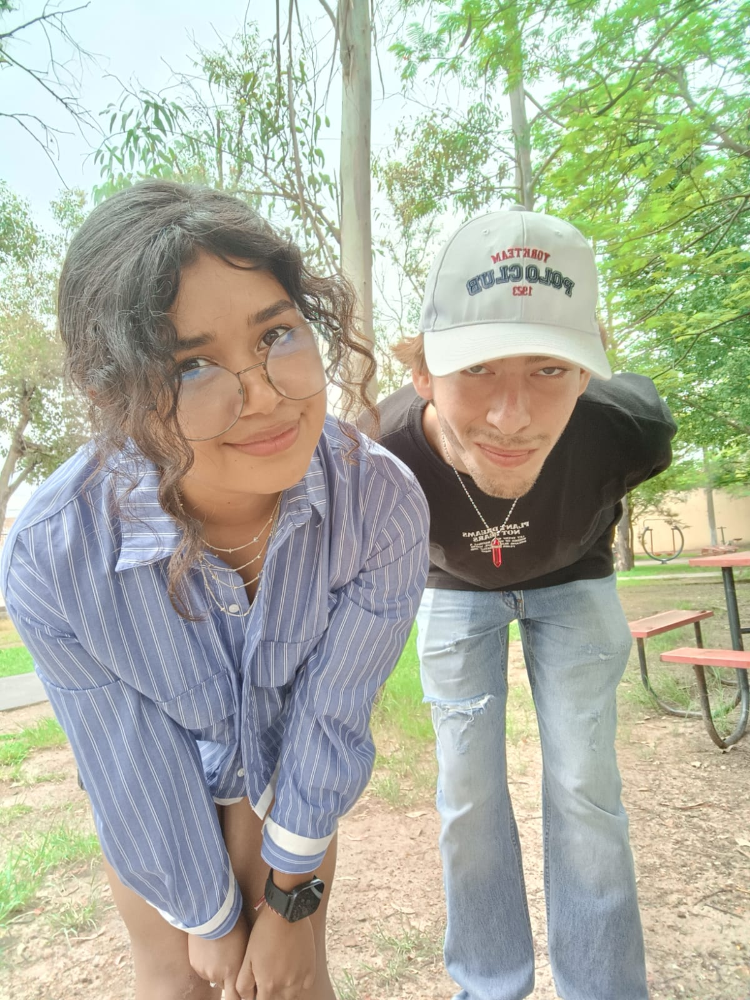
Me visitó porque estaba
malito ❤️🩹
La presencia.
No todos los momentos bellos han constado de salir o hacer cosas, muchos se tratan simplemente de compartir cosas cotidianas en la rutina: Cocinar, comer juntos, hacer tareas de la universidad, incluso simplemente acostarnos a echar un poco de hueva o estar juntos en silencio sin hacer nada. Incluso así se siente una gran conexión.
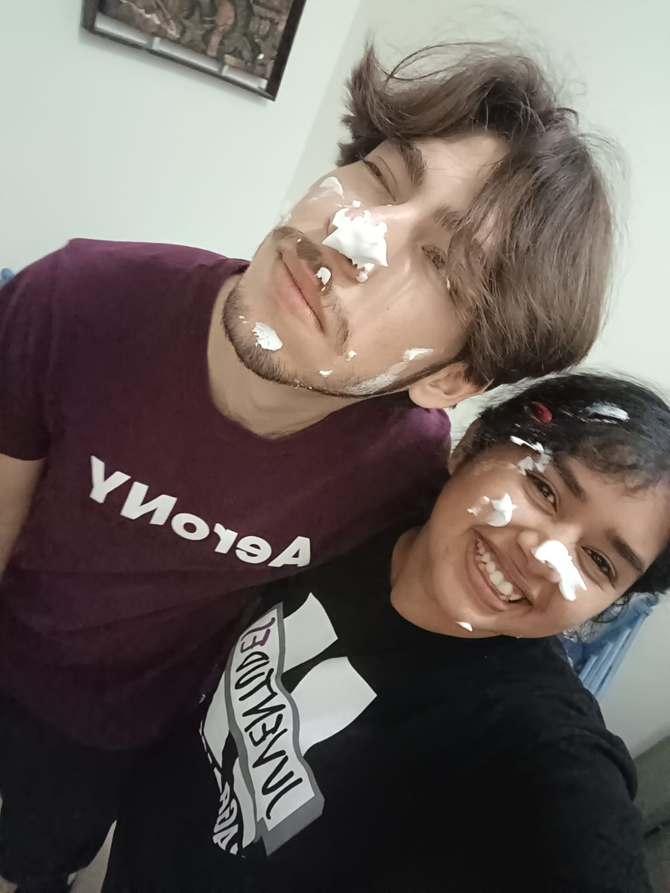
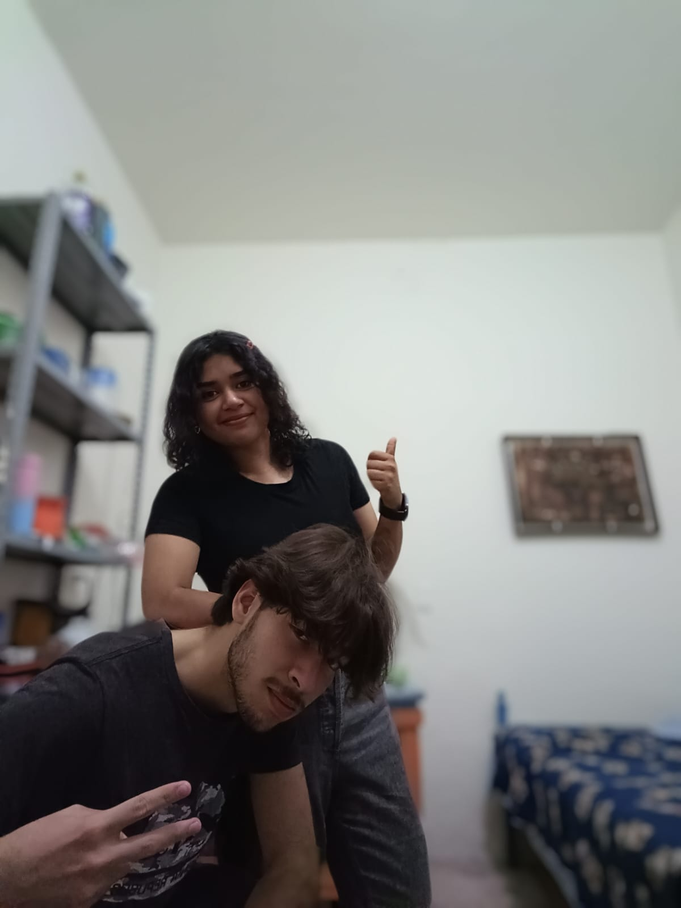
Posibilidades.
Podría seguir hablando de muchas más anécdotas, pero no hay papel suficiente en el mundo para describirlas todas. Hasta la próxima edición, jeje. Gracias por estos seis meses de experiencias, de compañía, de aprendizaje, de cuidado y de muchísimo amor. Te amo mucho, y espero poder compartir más de mi vida contigo. Ojalá dentro de muchos años podamos leer esta carta juntos y sonreír al recordar que apenas llevábamos seis meses, sin saber la hermosa vida que nos esperaba.
Besitos. Con amor:
— Antonio.
⩓